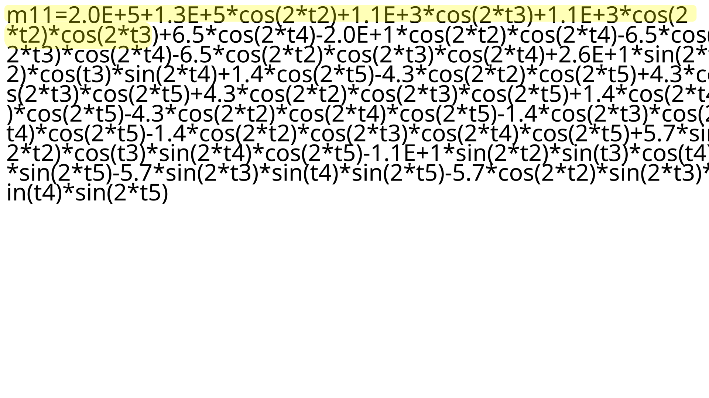
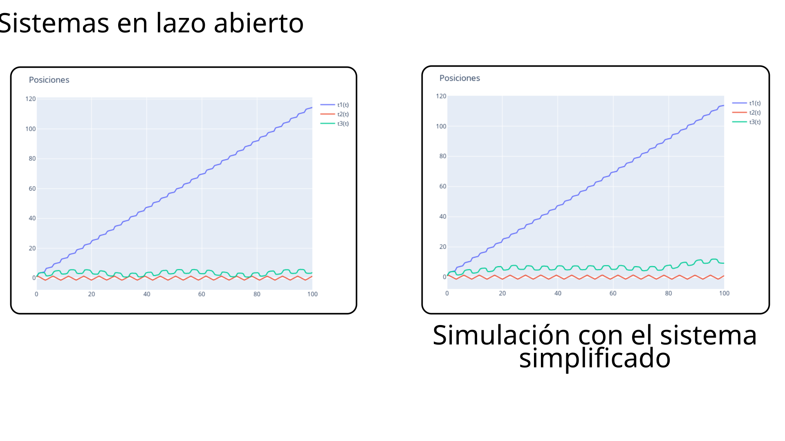
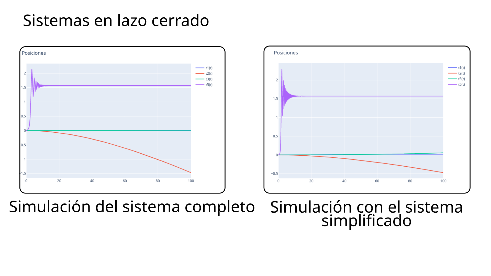

Los giroscopios son mecanismo utilizados para determinar la orientiación del lugar en donde están montados.
Su funcionamiento se basa en la conservación del momento angular, lo que les permite mantener una orientación continua en el espacio.
Raytheon Anschutz gyrocompassGiroscopio de torpedoTelescopio Hubble
Usados comunmente en:
Aviones
Cohetes
Satélites y naves espaciales
Torpedos
1. Motivación
Si se les aplican pares estrategicamente a su estructura se puede controlar la orientación de la plataforma. A este tipo de giroscopios se les conoce como controladores de momento (CMGs)
ECP 750CMGs en la ISS
1. Motivación
La dinámica de los CMGs se puede modelar desde la perspectiva de los sólidos rígidos en rotación. Casos interesantes de sólidos en rotación:
TrompoPeonza asimétricaTipee top
1. Motivación
La dinámica de los sólidos en rotación es compleja y no intuitiva.Un fenómeno de particular interés es el efecto Dzhanibekov
\[ \begin{aligned}
& \dot \Omega_1+\left(I_3-I_2\right) \Omega_2 \Omega_3 / I_1=0 \\
& \dot \Omega_2 +\left(I_1-I_3\right) \Omega_3 \Omega_1 / I_2=0 \\
& \dot \Omega_3 +\left(I_2-I_1\right) \Omega_1 \Omega_2 / I_3=0
\end{aligned} \]
\(\Omega\) es la velocidad angular, \(I_i\) (\(i=1,2,3 \)) son los momentos de inercia de los ejes principales del sólido.
Si \( I_1 < I_2 < I_3 \) una rotación sobre el eje principal \( I_2 \) es inestable.Una llave mariposa también exhibe este fenómeno.
Raqueta de tenis con 3 ejes principales de inercia diferentes.
1. Motivación
El índice par-potencia de los CMGs puede ser mil veces mayor que el que puede proporcionar una rueda de reacción (Votel y Sinclair 2012). Hay una clara tendencia en innovación en controladores y configuraciones de CMGs (Thieuw y Marcille 2007; Gui, Jin, y Xu 2014;
Mirshams y Khosrojerdi 2017; Evain et al. 2019; Curtis 2025).
Modelo
Manufacturero
M50
Honeywell
WHL 100
Veoware
CMG15-45S
Airbus
Satélites con CMGs
Peso
Categoría
Año de lanzamiento
Bilsat
130Kg
Micro / -7
2003
Pleiades
1015Kg
Mediano
2011
SPOT-6 / -7
714Kg
Mediano
2012
2. Objetivos
2. Objetivos
Objetivo general.
Diseñar, modelar y controlar un giroscopio controlador de momento con rotor asimétrico (GCMRA)
Objetivos específicos
Obtener las ecuaciones de movimiento que describan el efecto Dzhanibekov
Obtener un diseño de un GCMRA parametrizado
Proponer controladores
Proponer escenario de aplicación
Iteración sobre el diseño del GCMRA y del controlador para la obtención de
resultados óptimos.
3. Efecto Dzhannibekov y la integración en GCMRA
3. Efecto Dzhannibekov y la integración en GCMRA
\[ \begin{aligned}
& \dot \Omega_1+\left(I_3-I_2\right) \Omega_2 \Omega_3 / I_1= \tau_1, \\
& \dot \Omega_2 +\left(I_1-I_3\right) \Omega_3 \Omega_1 / I_2=\tau_2, \\
& \dot \Omega_3 +\left(I_2-I_1\right) \Omega_1 \Omega_2 / I_3=\tau_3.
\end{aligned} \]
Este modelo no considera la orientación del satélite ni los angulos de los gimbals. Por lo que hay que considerar cuaterniones o matrices de rotación. Este método es ampliamente usado.
La ecuación dinámica de robots, por otro lado, sí considera todos los ángulos.
\[ M(\theta)\ddot\theta + C (\theta, \dot\theta)\dot \theta + g(\theta)= \tau\]
\(M\) es la matriz de inercias, \(C\) es la matriz de Coriolis, \(g\) es el vector de gravedad y \(\tau\) es el vector de pares. En el caso de un vehículo espacial, o de un mecanismo con los centros de masa en un mismo punto, \( g\) puede despreciarse.
3. Efecto Dzhannibekov y la integración en GCMRA
Hay varias metodologías para modelar un sistema dinámico de este tipo.
Ecuación de Euler
Matrices de rotación (Arimoto, Suguru. 1996)
Cuaterniones (Mirshams, M., y M. Khosrojerdi. 2017)
Álgebra de cuaterniones (Möller, Michael, y Christoph Glocker. 2012)
Euler-Lagrange
Matrices de rotación
Álgebra geométrica
3. Efecto Dzhannibekov y la integración en GCMRA
3. Efecto Dzhannibekov y la integración en GCMRA
3. Efecto Dzhannibekov y la integración en GCMRA
Faltan demostraciones sobre la influencia de la inercia en la dinámica de los sólidos rígidos.
Exise la solución a las ecuaciones de Euler, sin embargo, para objetos en rotación con más de tres grados de libertad es muy complejo obtener una solución analítica.
Sistemas mecánicos subactuados
Acoplamiento inercial fuerte. Mismo número de actuadores que grados de libertad pasivos (Spong, M.W. 1994)
Acoplamiento inercial débil. Menor número de actuadores que grados de libertad pasivos
4. Obteción del los modelos parametrizados del GCMRA
4. Obteción del los modelos parametrizados del GCMRA
4. Obteción del los modelos parametrizados del GCMRA
Resumen del álgebra geométrica (Doran, Chris, y Anthony Lasenby. 2003)
4. Obteción del los modelos parametrizados del GCMRA
Los elementos clave de esta álgebra son:
Rotores
Velocidad angular
Enería cinética
Ecuaciones de movimiento para n sólidos concéntricos
4. Obteción del los modelos parametrizados del GCMRA
Reducción de los términos menos significativos del sistema
dinámico mediante análisis de sensibilidad
Eliminión de los términos más pequeños de la matriz M
4. Obteción del los modelos parametrizados del GCMRA

4. Obteción del los modelos parametrizados del GCMRA

4. Obteción del los modelos parametrizados del GCMRA

5. Control de sistemas subactuados
5. Control de sistemas subactuados
Para esta clase de sistemas no es viable aplicar controles (control algebráico) que requieran funciones explícitas de la ecuación
\[ \dot x = f(x) + b u\]
ya que implicaría la inversa de explícita \( M\). Una técnica ampliamente usada es la linealización parcial por realimentación. Se puede trabajar con un sistema implícito.
5. Control de sistemas subactuados
Requiere \(\bar{M}_{22}\) invertible Strong inertial coupling: Rango \(M_{12}, \tilde{M}_{21} \geq\) número de grados de libertad pasivos
si se cumple, entonces se usa la pseudoinversa \(M^{\dagger}_{12}\)
5. Control de sistemas subactuados
Requiere \(\bar M_{22}\) y \(\bar M_{33}\) invertible Weak inertial coupling: Rango \(M_{13}, \tilde{M}_{33} = \) número de grados de libertad objetivo pasivos
si se cumple, entonces se usa la pseudoinversa \(M^{\dagger}_{13}\)
5. Control de sistemas subactuados
Las literatura indica que los sistemas subactuados son una solución para el control de apuntado de nano-satélites.
El análisis de controlabilidad de este tipo de sistemas también contribuye al análisis de falla de sistemas completamente actuados y redundantes.
6. Elección de la plataforma
6. Elección de la plataforma
6. Elección de la plataforma
Referencias
Referencias
Votel, Ronny, y Doug Sinclair. 2012. “Comparison of Control Moment Gyros and Reaction Wheels for Small Earth-Observing Satellites”.
Thieuw, Alain, y Hervé Marcille. 2007. “Pleiades-HR CMGs-Based Attitude Control System Design, Development Status and Performances”. IFAC Proceedings Volumes 40(7): 834–39. doi:10.3182/20070625-5-FR-2916.00142.
Gui, Haichao, Lei Jin, y Shijie Xu. 2014. “Maneuver planning of a rigid spacecraft with two skew control moment gyros”. Acta Astronautica 104(1): 293–303. doi:https://doi.org/10.1016/j.actaastro.2014.08.010.
Mirshams, M., y M. Khosrojerdi. 2017. “Attitude Control of an Underactuated Spacecraft Using Quaternion Feedback Regulator and Tube-Based MPC”. Acta Astronautica 132: 143–49. doi:10.1016/j.actaastro.2016.11.033.
Evain, Hélène, Daniel Alazard, Mathieu Rognant, Thomas Solatges, Antoine Brunet, Jean Mignot, Nicolas Rodriguez, y Dias Ribeiro. 2019. “Satellite Attitude Control with a Six-Control Moment Gyro Cluster Tested under Microgravity Conditions”. En Melbourne.
Curtis, Hywel. 2025. “Reaction Wheels or Control Moment Gyroscopes - Which Should You Choose for Your next Space Mission?” satsearch blog. https://blog.satsearch.co/2025-06-06-reaction-wheels-or-control-moment-gyroscopes-which-should-you-choose-for-your-next-space-mission (el 11 de agosto de 2025).
Arimoto, Suguru. 1996. Control Theory of Nonlinear Mechanical Systems. USA: Oxford University Press, Inc.
Mirshams, M., y M. Khosrojerdi. 2017. “Attitude Control of an Underactuated Spacecraft Using Quaternion Feedback Regulator and Tube-Based MPC”. Acta Astronautica 132: 143–49. doi:10.1016/j.actaastro.2016.11.033.
Möller, Michael, y Christoph Glocker. 2012. “Rigid body dynamics with a scalable body, quaternions and perfect constraints”. Multibody System Dynamics 27(4): 437–54. doi:10.1007/s11044-011-9276-5.
Referencias
Spong, M.W. 1994. “Partial feedback linearization of underactuated mechanical systems”. En Proceedings of IEEE/RSJ International Conference on Intelligent Robots and Systems (IROS’94), , 314–21 vol.1. doi:10.1109/IROS.1994.407375.
Doran, Chris, y Anthony Lasenby. 2003. Geometric Algebra for Physicists. Cambridge University Press.